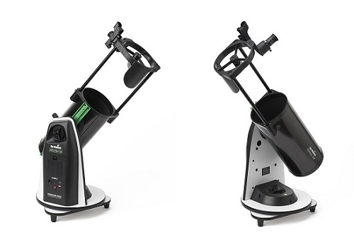
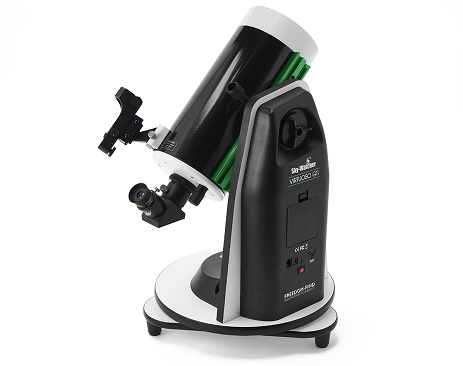

|
|
RECENT & UPCOMING EVENTS
<- Aurora Borealis visible (2nd time this year) the early hours of Sunday 13th Sep 2023.
-> meteor showers: Perseids Aug 12-13 2023; Orionids 20-21 Oct 2023; Leonids 17-18 Nov 2023; Geminids 13-14 Dec 2023.
-> Partial Lunar Eclipse, 9pm Sat 28 Oct 2023.
-> Occultation of Venus by Moon, 9:50-10:20am 9 Oct 2023.
-> Jupiter & Saturn return to view late Autumn 2023 (Saturn from mid Aug, Jupiter mid Oct)
YOUR FIRST SCOPE
Starting out in astronomy, at some stage you’re going to get a "first scope”. Luckily for astronomers, a first scope can be got at superb quality and
surprisingly reasonable cost. That said, there is a lot of crap around at the EUR 600 price point, especially if you look at such as eBay, so below I've
listed a couple of items that represent extraordinary value for the optical quality they give. So good, in fact, that most astronomers will keep and use these
telescopes even after having climbed the ladder and got bigger and more expensive stuff.
It must be said first that although the first question for an aspiring astronomer is “what first scope?”, a scope purely on its own is no use without
what's called a “Mount”. A mount usually comprises a tripod and a head, and although what I recommend below are a couple of slightly different "non-tripod" arrangements, the point is
the same. The Mount must be sturdy and well-enough engineered to support and accurately point the scope. A scope at high magnification on a wobbly tripod/mount
is completely useless.
I suggest here a couple of options for such a scope/mount package. They are each of excellent optical quality (around 1/6 PV, in the parlance) and I consider it
amazing they can be produced at that quality at these prices. I’ve used both myself, and saw the Veil Nebula for my very first time with the
Heritage 150p’s smaller sibling, the 130p. Each very good scopes indeed.
- - -
Skywatcher Heritage 150p / Virtuoso GTi Mount. EUR 550 from ktectelescopes.ie or GBP 399 from firstlightoptics.com, prices as at August 2023.

This is a Newtonian Reflector with a focal length of 750mm and 6” aperture. As scopes go, 750mm is on the short side, allowing lovely
wide-field (31x magnification with a 24mm eyepiece) views of such as The Pleiades or the Double Cluster, but still perfectly capable of reaching,
say, 250x magnification (with a 3mm eyepiece) for planets, double stars or the Moon.
In this package the scope is supplied with Skywatcher's newish Virtuoso GTi mount, which in concert with Skywatcher’s SynScan App (free) can be controlled and pointed
using a phone or tablet. The mount will track whatever it’s pointed at as the object moves across the sky with the Earth’s rotation, meaning you don't have to keep nudging it to
keep it in the field of view.
- - -
Skywatcher SkyMax 127 / Virtuoso GTi. EUR 700-ish from ktectelescopes.ie (probably) or GBP 519 from firstlightoptics.com

This is a type of scope called Maksutov-Cassegrain, with 127mm aperture (5”). It has a longer focal length than the Newtonian above, 1500mm
(i.e. double), giving a higher range of magnifications. However it is not a long or big scope, shorter in fact than that above owing to the folded internal light-path. It is
superb on planets, double stars and the Moon, but not ideal for the really wide-field views of some of the larger Open Clusters. Minimum realistic mag will be around 50x,
maximum perhaps 500x (way beyond what "atmospheric seeing" will permit or what most astronomers will ever use).
The mount is the same as for the Heritage above.
BUT ... while the main mirrors of both these scopes are excellent, they will be supplied with a pair of eyepieces, probably a 25mm and a 10mm. Why, I don't know. Even
Skywatcher's multi-thousand Euro scopes come with these same eyepieces. The 25mm is not too bad but the 10mm is really poor, essentially useless. The first thing you
should do is upgrade the eyepieces. I recommend “BST Starguider”, which retail for 50-60 and can readily be got used for 35 or so. For their price,
they are superb.
Thus, for a sum in the region of EUR 6-700, you can equip yourself with a scope which, as and if you progress to bigger and more expensive, you will still keep and use. I have a
Heritage 150p/Virtuoso on my own current wish-list, it's just so portable. I started off with the exact Mak 127 above, and regret having sold it.
AWAY-from-HOME OBSERVING CHECKLIST
See below a check-list of those things you might want to remember when heading out to an observing trip away from home or for a club meet-up. If you’re like me,
without a check-list, you’ll inevitably forget something crucial and - best case – you’ll have to borrow, say, a power cable from someone else; or – worst
case – you won’t be able to observe at all, because you left your mount controller behind. We’ve all been there. For now, this list is aimed primarily at
observers. Astro-photographers will likely have a slightly different list. When we get an "AP-er" on board, I'll get them to add one.
Tripod + tray; Mount head; Actual telescope (OTA); Mount power supply (e.g. battery); battery cable; Mount controller handset; Phone/tablet; Controller cable;
Finder; Eyepiece case; Accessories case (e.g. diagonals, adapters); Filters; Mount counterweights; Collimation tools; Dew/light shield; Head torch; Observing
chair; Spirit level;
|
email: baltimoreastronomy@gmail.com | tel/WhatsApp: 089 613 0361
|
|
|
Latest Additions
First Scope Aug 2023
What to get as a first telescope
Observing Checklist May 2023
List of "things to remember" when observing away from home
|
|